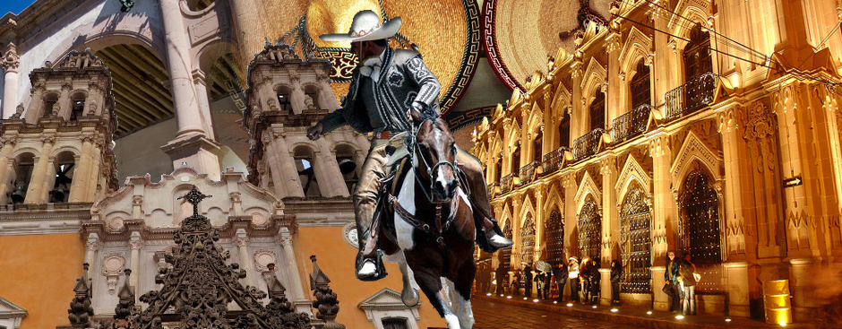
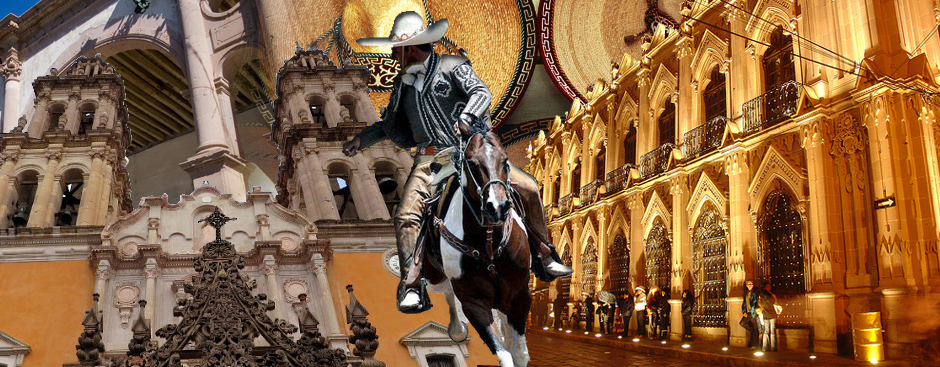

-

JEREZ DE GARCÍA SALINAS
Esta apacible población donde se saborea el ambiente provinciano, es conocida por ser la cuna del poeta Ramón López Velarde, y se convirtió en el primer "Pueblo Mágico" de Zacatecas. Con este estatus, desde el año 2007 Jerez se promueve como destino turístico nacional e internacional. Read more
-
SOMBRERETE
Esta población, cuyo nombre deriva del cercano y dominante cerro del “Sombreretillo, por la forma que éste tiene de sombrero tricornio de la época, fue fundado en 1555 por Juan de Tolosa y en sus inicios fue nombrada como Villa de Llerena de San Juan Bautista y Real de Minas de Sombrerete, con una fama de potenciales e inagotable yacimientos de oro y plata explotados desde esa época. Read more
-

NOCHISTLÁN DE MEJÍA
Ninguno como éste para conjuntar el pentagrama de los cinco baluartes turísticos que circundan el estado de Zacatecas. Y es que de ninguna manera su belleza e importancia histórica podían ser indiferentes, ni quedar fuera de este justo reconocimiento como Pueblo Mágico. Con este su nombramiento, en noviembre de 2012, Nochistlán recupera su nivel e importancia histórica de antaño. Esta población, cuyo nombre puede ser entendido como "lugar de tunas" o "lugar de grana", se encuentra situada al sur de la entidad, a una distancia de 220 km. de la capital estatal (2 ½ hrs.). Read more
-
TEÚL DE GONZÁLEZ ORTEGA
Teúl (teotl) Dios, es también un adjetivo que califica a los chichimecas como sagrados, venerados, respetables (Tetl) "Gran piedra redonda", según otros. "De González Ortega", porque a partir de 1800 llega al Teúl un tío del Gral. J. Jesús González Ortega el cual, dadas sus cualidades docentes, funda una escuela. Sin precisar fecha, pero muy probablemente a la edad de cinco años, llega también a vivir al Teúl el niño Jesús González Ortega; después de sus estudios en el Seminario de Guadalajara aparece de nuevo en el Teúl, como escribiente en el juzgado. Por esta razón, durante mucho tiempo se creyó que era originario del Teúl. Read more
-

PINOS
Este Real de Nuestra Señora de Sierra de Pinos, fue fundado en la segunda mitad del s. XVI, durante las exploraciones españolas realizadas por el capitán mestizo Zacatecano Miguel Caldera. Como toda población minera, la irregular topografía natural propició el forjamiento de un conglomerado pero encantador conjunto de viviendas que con el transcurrir dieron forma e importancia al real, surgiendo estupendos edificios religiosos como la parroquia de San Matías, el templo de Tlaxcalita, el de San Francisco y el de la Santa Veracruz. Read more
- 
-
-